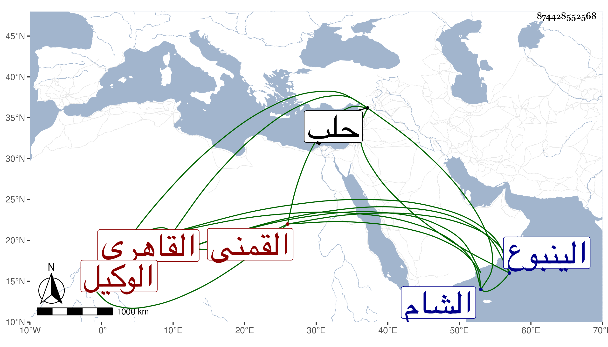

0902Sakhawi.DawLamic.ITO20230111-ara1.EIS1600.874428552568
Biography ID: 874428552568
53
محمد بن أحمد بن عمر بن إبراهيم بن هاشم البدر القمنى الأصل القاهري الوكيل حفيد شيخنا السراج وسبط الفخر عثمان البرماوي والد شهاب أحمد . ولد سنة ثمان وعشرين وثمانمائة بالظاهرية القديمة ونشأ فحفظ القرآن والمنهاجين والشاطبيتين وألفية النحو ، وعرض على التلواني والونائي والقاياتي وشيخنا والعلم البلقيني وغيرهم وحضر دروس الشمس الشنشى وقاسم البلقيني وجود القرآن على ابن كزلبغا بل قرأ عليه الشاطبيتين بتمامهما وكذا وجود بعضه على الزين طاهر وقرأ في النحو على الابدي وسمع الحديث على فاطمة الحنبلية بقراءة البقاعي وعلى القادمين من الشام عند نائب القلعة تغرى برمش الفقيه بقراءة القلقشندي وعلى شيخنا وغيرهم ، وتنزل في المؤيدية وغيرها بعد أبيه تنزيل الواقف ثم أعرض عن الاشتغال ووقف بباب العلم البلقيني ثم ابن الديري وراج أمره بذلك في باب ابن الشحنة وسافر له إلى حلب في بعض ضروراته ، وحج غير مرة أولها في سنة اثنتين وخمسين وجاور كثيرا وكان هناك يجلس بباب السلام ويتوكل ويحضر دروس البرهان ثم ولده وكذا أكثر من السماع عندي وحضور كثير من دروسي في مجاورتي وأكثر من الطواف والتلاوة وتناقض حاله جدا وكان مجاورا أيضا في سنة ثمان وتسعين ورجع أحد ولديه مع الركب وفارقه من الينبوع فركب البحر ثم رجع هو في البحر في جمادى الأولى من التي تليها ومعه زوجته وابنة الآخر كتب الله سلامتهم .
